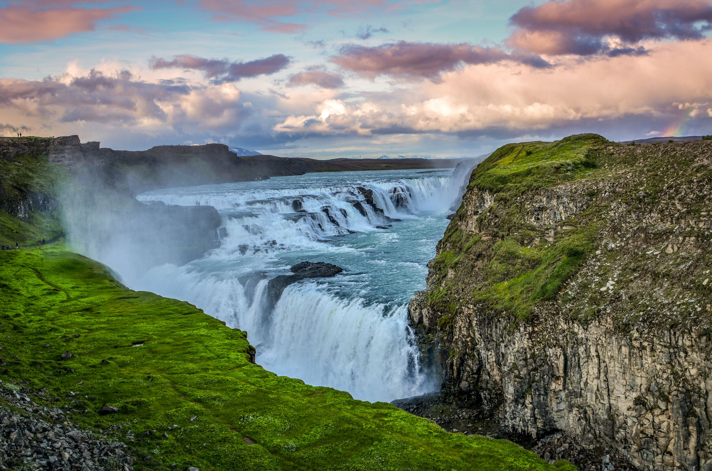
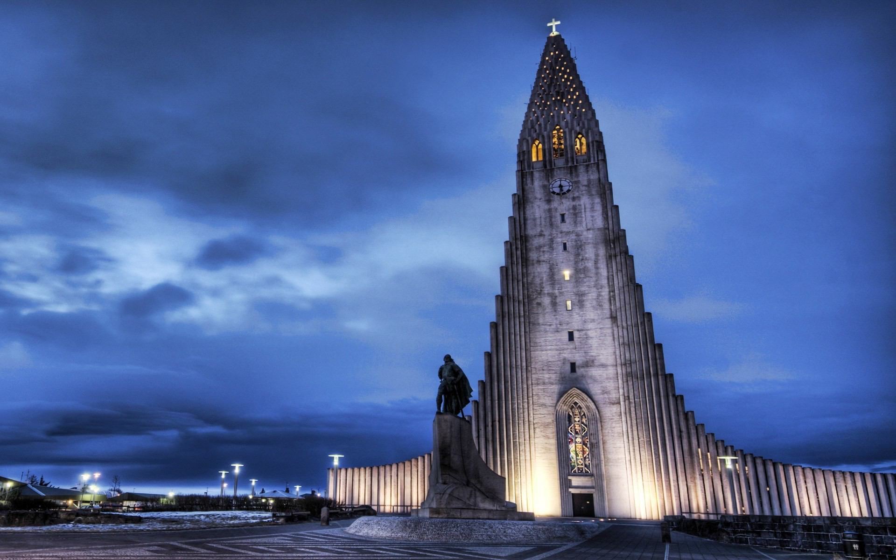
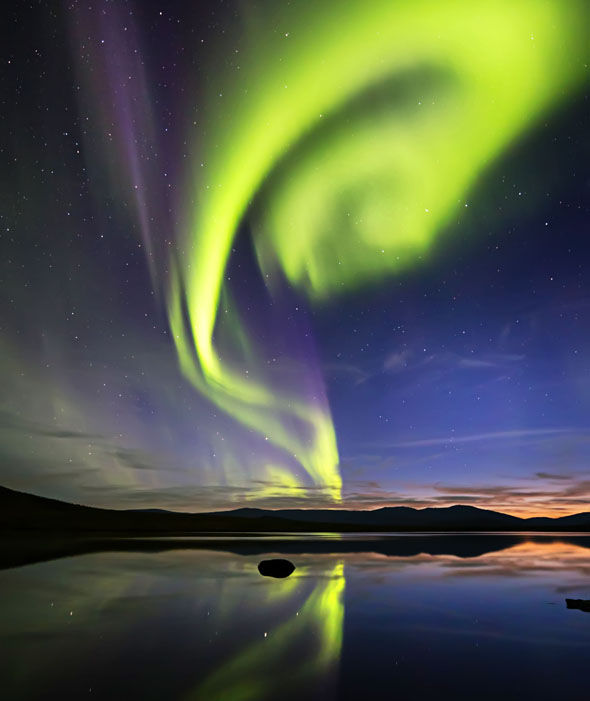
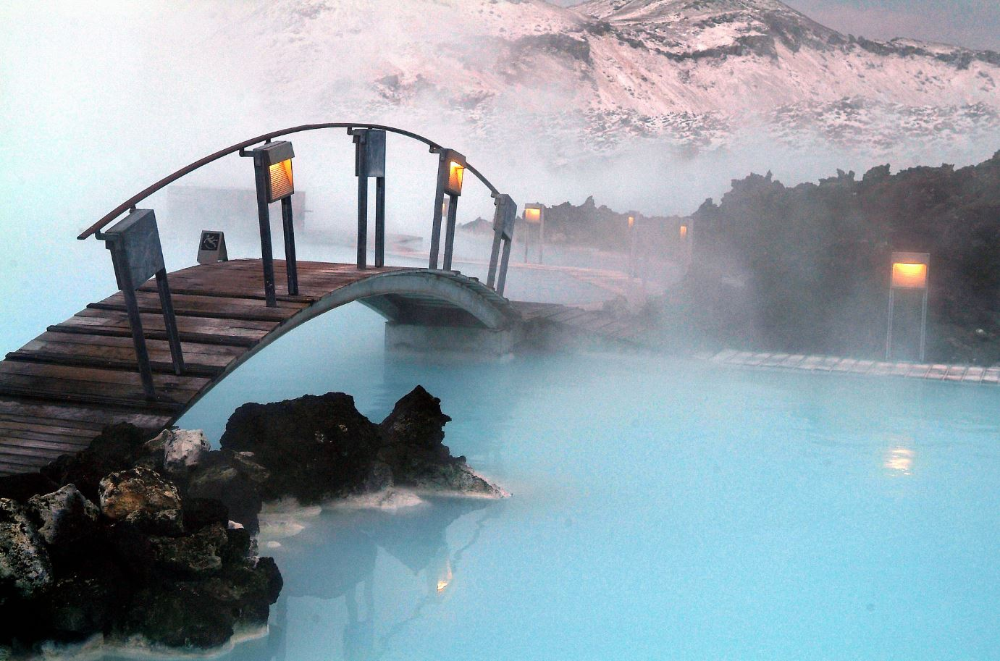
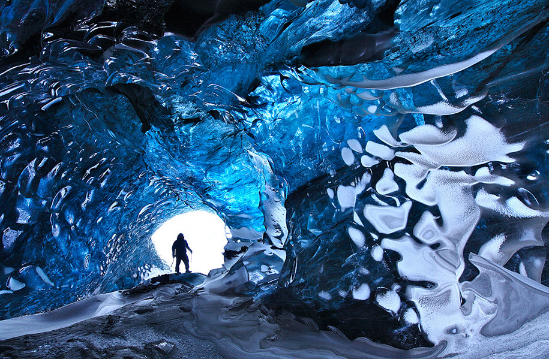
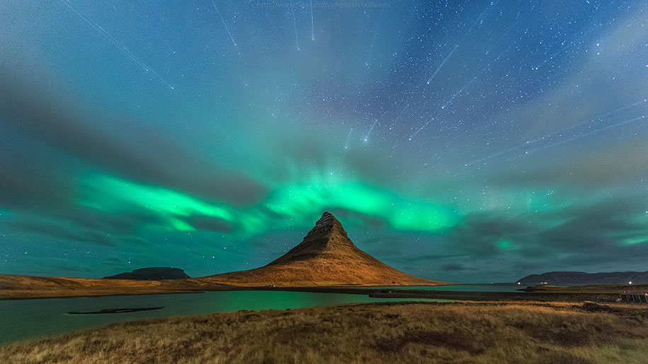
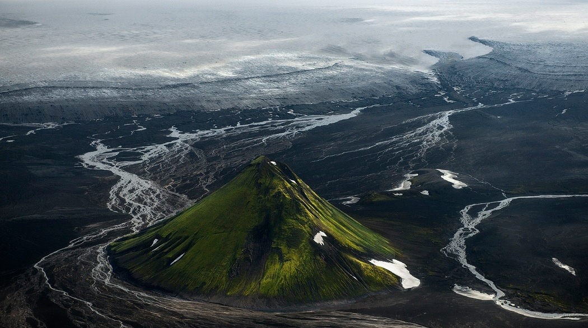
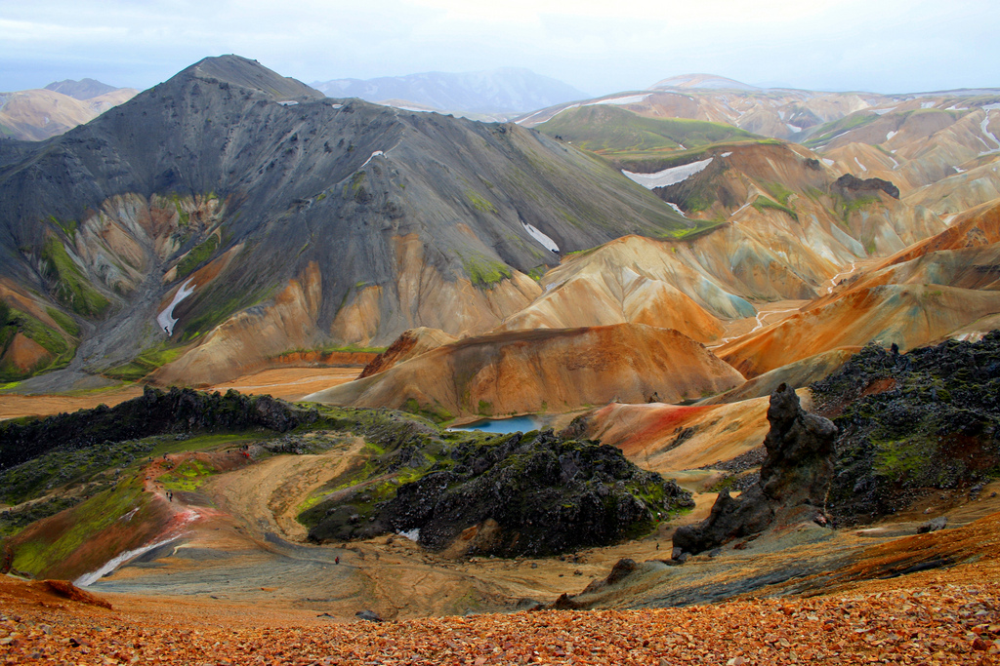
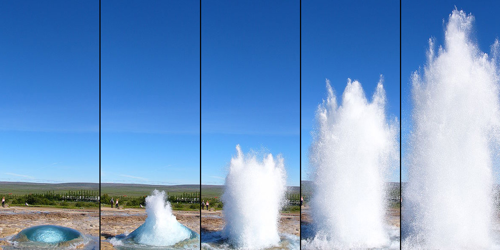

1. Gullfoss Waterfall

The gorgeous waterfall is one of the most popular attractions in the country. Located in the canyon, which forms three step terraces, river Hvítá plunges creating a powerful stream and Gullfoss. There are no rails – just a natural surroundings. This astonishing waterfall climaxes and crowns the renowned “Golden Circle,” the country’s most common day trip from the capital. This place looks almost too flawlessly landscaped to be real, but it definitely is.
2. Hallgrímskirkja

The unique church is situated in the middle of Reykjavík. It is the tallest and most recognizable building in the country. The architecture was inspired by the Black Falls – another Icelandic natural wonder.
3. The Northern Lights

The northern phenomena is also among the most popular attractions. The dazzling lights are especially bright this year, since the increase of solar activity. The lights are best admired in the remote places, further from the urban lights.
4. Blue Lagoon, Grindavík

Geothermal spa offers the most relaxing natural bathing and is the most tempting attraction, found only 40 minutes away from Reykjavík. The water from the underground hot springs reaches 37–39 °C and is beneficial for health and skin. This popular man-made geothermal spa of crystal clear water is the only site on earth you can swim in 40 degree centigrade water year round, and yet be encircled by ice and snow.
5. Skaftafell Ice Cave, Vatnajökull National Park

The land of ice – country is literally covered in ice and snow. The overwhelmingly beautiful ice caves attract adventurers. The travel agencies organize trips to the glaciers, from where the caves can be visited.
6. Kirkjufell Mountain

Near a small town of Grundarfjörður in the western Iceland, the mountain beautifully sticks out in a plain landscape. In the surroundings of this striking mountain one can find small waterfalls and admire the Northern Lights at night.
7. Maelifell Volcano, Myrdalsjökull Glacier Park

The perfect cone makes Maelifell a classic looking volcano. During a warm season snow uncovers a lavish green surface, covered with moss. There is plenty to do and see in the park, full of volcanoes, hot springs and other beautiful sites.
8. Landmannalaugar

The multicolored rhyolite mountains, lava fields and the Hekla volcano make it a popular tourist destination. The striking landscapes look like a different planet. Hiking and horse riding are among the most popular activities here.
9. Geysers

Due to the volcanic activities underneath the surface, a lot of geysers, underground springs and thermal pools are scattered all around the country. To see a powerful hot stream shooting from the ground is definitely exciting.
10. Whale Watching

The gentle marine giants can be seen from the different locations in the country including Reykjavík. Several companies organize the 2-3 hour whale watching tours. Icelanders also hunt whales, so later you can order it in the restaurant. Cruel, but this is life.